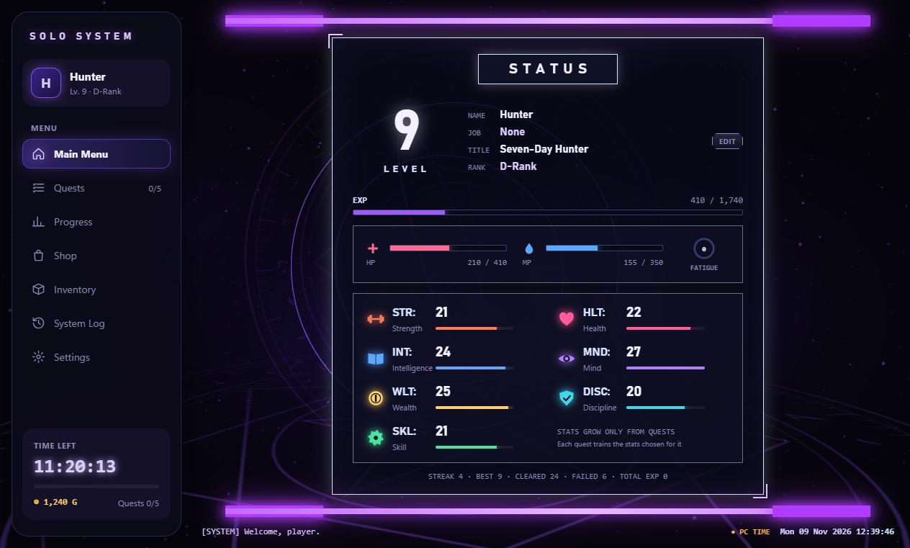
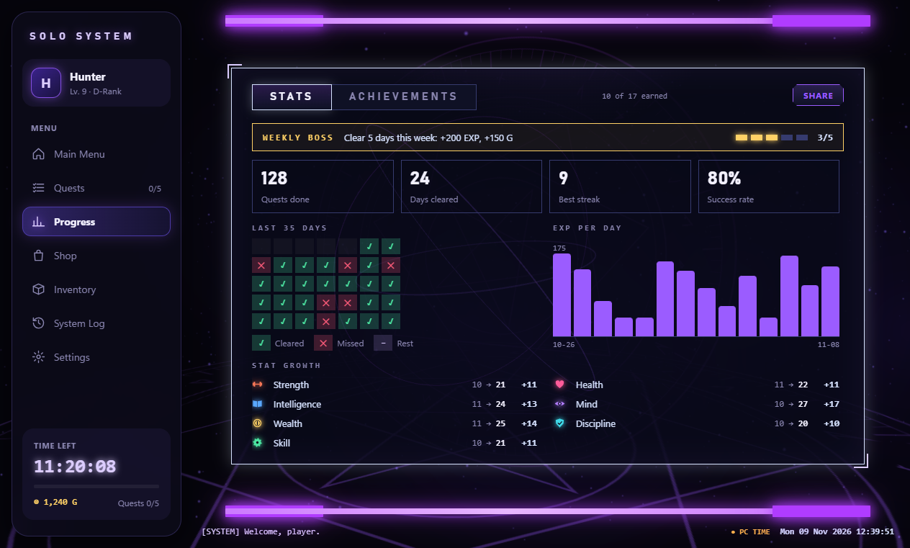
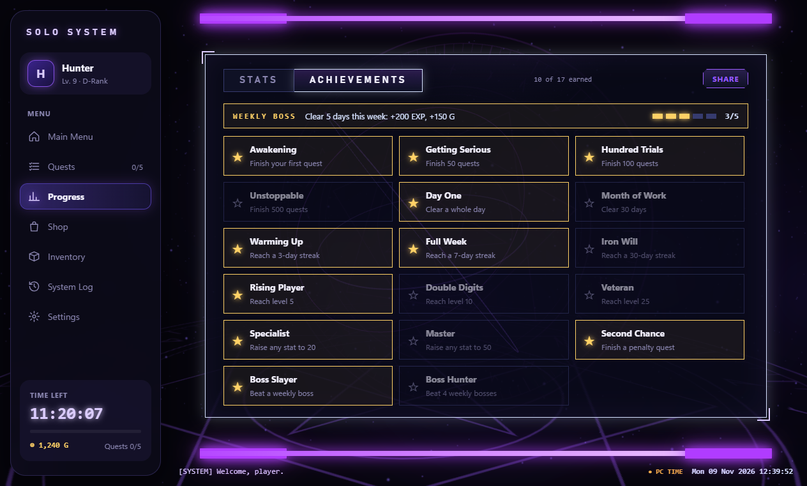
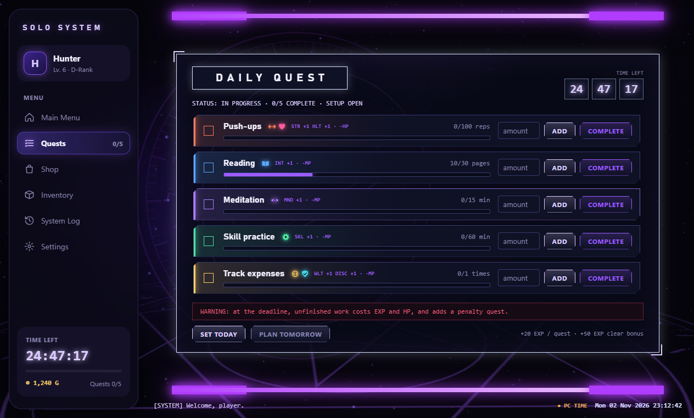
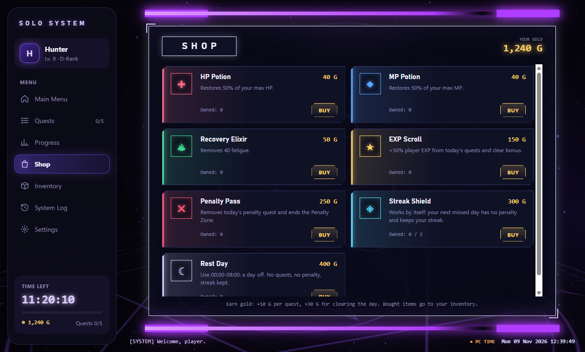

Turn your daily habits into quests. Every finished quest gives EXP, gold and +1 to its stats.

Solo System is a free, Solo Leveling inspired daily quest app and gamified habit tracker for Windows. It is an independent fan-made project, not affiliated with the official Solo Leveling series or games.



